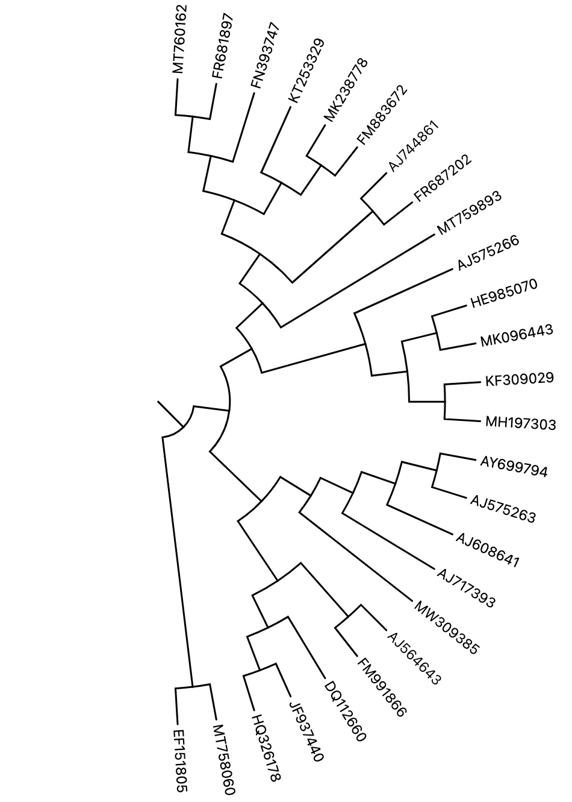
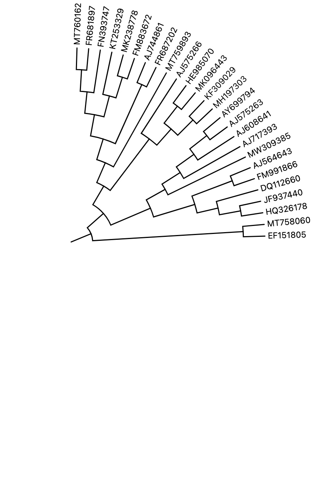

Text style
switch: Whether to display text of leaf node.
font-size: Svg text attribute.
fill: Svg text attribute.
font-weight: Svg text attribute.
font-style: Svg text attribute.
word-italic: This attribute can change the specified word to italic by the given string specifier. The general form of a specifier is the index (starts from 0) of the word separated by comma:
// One word:
0
// Two words:
0,1
1,2
// Three words:
0,1,2
...
| String specifier | Text style |
|---|---|
| Phaeobacter gallaeciensis LMIT007 | |
| 0 | Phaeobacter gallaeciensis LMIT007 |
| 1 | Phaeobacter gallaeciensis LMIT007 |
| 0,1 | Phaeobacter gallaeciensis LMIT007 |
| 0,2 | Phaeobacter gallaeciensis LMIT007 |
| 0,1,2 | Phaeobacter gallaeciensis LMIT007 |
There is drawback that it will uniformly change the italic style of the text acording to the word index in string specifier. Sometimes we need to change the italic style individually for their various word indexes. For instance, leaf names
Phaeobacter gallaeciensis LMIT007,Pleurosigma sp. SK005andLactobacillus delbrueckii subsp. sunkii JCM 17838coexist in the tree, and we need0,1,0and0,1,3as string specifier respectively. Thus, you can leave this attribute a blank valve and add a layer dataset calledword italicto realize this requirement.
x: Move the text element by x .
y: Move the text element by y.
Leaves Extension
extension: Whether to align the text of each leaf node.
stroke: Svg line attribute.
stroke-width: Svg line attribute.
stroke-dasharray: Svg line attribute.
stroke-opacity: Svg line attribute.
Circle size
endAngle:
- 180 and 90 degrees 